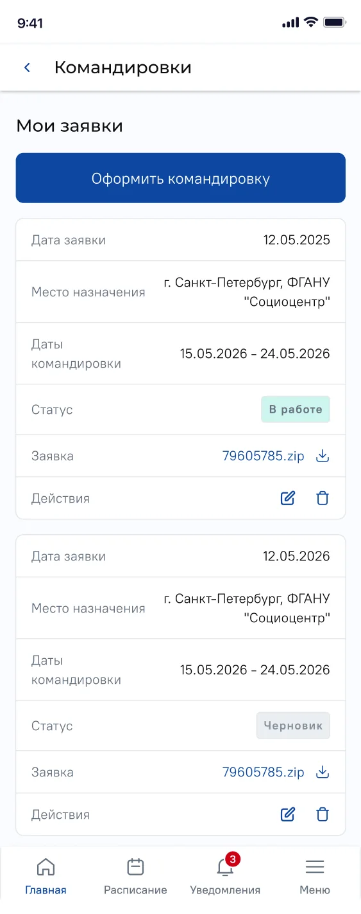
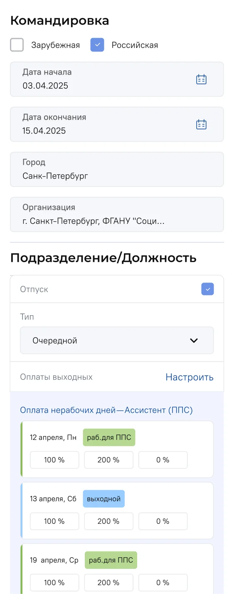
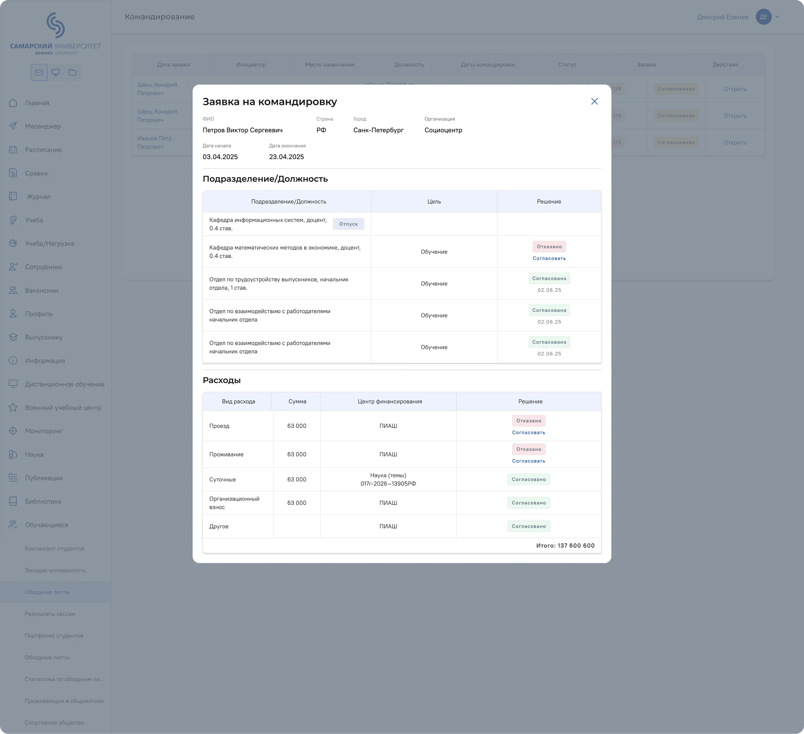
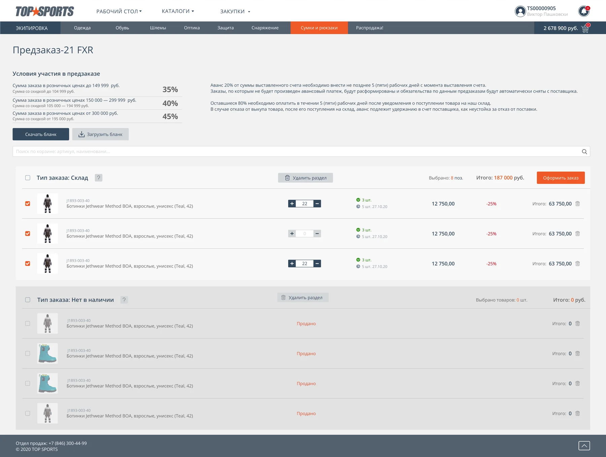
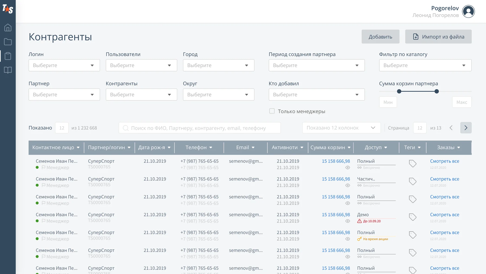

8 лет в B2B и B2C, web и mobile. Веду полный цикл продуктового дизайна: от discovery и UX-исследований до UI, дизайн-ревью и анализа метрик. В работе использую Codex, Claude и другие ИИ-инструменты.
Оформление без единого личного визита — от заявки до закрывающих документов, полностью в онлайне.



Процесс существовал только офлайн: бумажная заявка, личная подпись руководителя, отдельный визит в бухгалтерию для согласования оплаты и получения закрывающих документов.
Разобрала реальный процесс согласования вместе с бухгалтерией и кадровой службой. Спроектировала статусную модель из пяти состояний, которая отражает фактический workflow командировки от подачи до расчёта.
Глобальная аналитика по 10+ зданиям — единый инструмент финансового контроля вместо разрозненных данных.
Данные по 10+ зданиям существовали разрозненно, без связи с помещениями и подразделениями и без единой аналитики — понять, кто сколько тратит, было невозможно.
Разобралась в реальной структуре учёта — счётчики оказались иерархическими, что нигде не было формализовано. Спроектировала структуру данных и интерфейс с нуля, связав иерархию счётчиков со справочником помещений.
Кафедры перешли на цифровой формат добровольно — ещё до официального приказа.
Оценки вносились в бумажные ведомости вручную, с риском ошибок при переносе и без прозрачности статуса для деканата.
Спроектировала цифровой workflow ведомости с пошаговым статусом — внесение оценок, закрытие ведомости, отправка в дирекцию, обработка — сохранив привычную для преподавателя логику работы.
Кафедры начали работать в электронных ведомостях сами, до официального распоряжения. Для консервативной структуры это сильный сигнал: новый процесс оказался удобнее бумажного, и его не пришлось внедрять приказом. Деканат видит, на каком этапе каждая ведомость, без звонков и сверки бумажных копий.
Карта загруженности в реальном времени — двойные брони устранены.
Бронирование велось вручную по звонкам и бумажным заявкам — двойные брони и простой аудиторий были обычным делом.
Спроектировала подбор аудитории по фильтрам — дата, корпус, время, наличие проектора — с проверкой доступности в реальном времени, чтобы конфликт брони был виден сразу при подаче заявки, а не постфактум.
Сервис трудоустройства при вузе — +25 % выпускников нашли работу, 70 % студентов прошли стажировку.
У работодателей не было единого канала для поиска студентов-стажёров на платформе; у отдела занятости — инструмента модерации вакансий и откликов.
Спроектировала личный кабинет работодателя с публикацией вакансий и системой откликов, плюс архив с историей закрытых позиций — работодатель и студент взаимодействуют напрямую, без посредников.
B2B-портал для оптовой продажи экипировки для экстремальных видов спорта по всей России.
Ключевой экран — корзина оптового предзаказа: десятки позиций в одном окне с условиями скидок, авансом и статусами поставки.


Дилеры формировали предзаказ в Excel-бланках и согласовывали его по почте и телефону. Наличие, скидочные пороги и сроки поставки приходилось сверять вручную, уже после отправки заявки.
Спроектировала корзину предзаказа с разделением позиций по типу заказа — со склада и нет в наличии — и пошаговыми статусами наличия со сроками поставки. Встроила условия скидок по сумме заказа и авансовую схему оплаты прямо в экран, а для массового ввода позиций добавила выгрузку и загрузку бланка заказа.
Предзаказ переехал из Excel-бланков и переписки в одну корзину. Дилер видит наличие, сроки поставки, пороги скидок и аванс до отправки заказа, а не после согласования с менеджером. Загрузка бланка заказа сохранила привычный дилерам формат массового ввода.